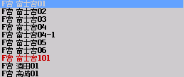
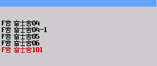
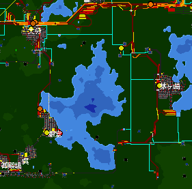
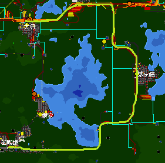
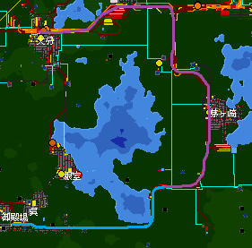

久々に観察してみた
こんばんは．盛分交通開発記を取り敢えずこっちに移転します．過去の記事は...なかったもんだと思ってください．
そもそもシムトラをやるのが久々でしたので，ひとまずスポーン地点（で合ってる？）の周りを見てみたら...まあひどいｗ
まず，自動車の富士宮営業所には...

これくらいの系統があります．普通の営業所ですね．では，この路線一覧から富士宮市内への乗り入れがない系統を消してみましょう．

ん？？？？下２つはまだしも，消えちゃいけないのが消えたね？？？そう．この営業所には，系統名にある市内に一切乗り入れない系統が存在します...
他の営業所ではどうでしょう．集計してみました．本線が市内に乗り入れていて，支線のみ乗り入れていないなど，事情のある場合は括弧内に集計しています．
- 川越営業所(A)：０
- 別府営業所(B)：０
- 茅ヶ崎営業所(C)：０
- 鷹女営業所(E)：０
- 古川高速営業所(Fh)：０
- 古川営業所(Fw)：０
- 富士宮営業所(F)：３
富士宮01，富士宮02，富士宮03 - 大垣営業所大分派出(Gt)：０
- 大垣営業所本所(G)：０
- 隼営業所(Hb)：０
- 藤河営業所(H)：集計除外
- 釜石営業所(Km)：０（２）
高崎02-1，高崎02-2．高崎02は高崎市内乗り入れあり． - 川之江営業所(Kw)：０
- 倉敷営業所(K)：４
倉敷10-3，倉敷10-4，倉敷10-4b，倉敷54 - 大曲港営業所(Mp)：０
- 松虫営業所(Mt)：０
- 大曲営業所(M)：０
- 根室営業所(Ne)：０（１）
茅ヶ崎南線．長くなるので後述． - 那覇営業所(Nh)：０
- 西渋川仮乗降場前駐車場(Ns)：０
- 飯田港営業所(P)：０
- 盛岡営業所(R)：０
- 渋川営業所(Sb)：０
- 小樽営業所(T)：０
- 宇和島営業所(U)：１
宇和島03． - 和歌山営業所(W)：０
- 米子営業所(Y)：０
見てみると，（記憶が正しければですが）古株の営業所にあった路線がおそらく鉄道開通で分断されて市内乗り入れがなくなっていそうです．本当に推測ですが...
んでそれならまだしも，倉敷10はなぜか本線が見当たりませんでした．そもそも，営業所を分割するだけして系統番号を整理していないがために一部番号が欠落している営業所すらある状況です．
茅ヶ崎南線は例外で，鉄道線を自動車に転換した路線です．まずは現在の地図をご覧ください．

かつて，茅ヶ崎南線は，鉄道として現在も存続している茅ヶ崎北線と同じ路線でした．

しかし，東根室駅にある製材所で木材が不足したため，電化し電機牽引による高速木材貨物列車を走らせることになりました．その時に

茅ヶ崎北線はどんどん輸送量も増えていき，電化当時は18m4両だった電車は今や20m6両となりました．かたや茅ヶ崎南線は貨物需要も大して起きませんでした．特に，当時ほぼ唯一の南線を通過する需要であった，セメント需要が局所的であったこと，旅客輸送も気動車単行でも減便を繰り返してようやく黒字になるほどにしか輸送量が至らなかったことは南線の存続に大きな疑問符を生じさせることとなりました．
結果，茅ヶ崎南線は自動車専用道路で代替することとし鉄道を廃止．「茅ヶ崎南線」の路線名は，貨客両用の自動車専用道路を走るバス路線の名前となりました．
今日はここまで．また次回も，よろしくお願いいたします．